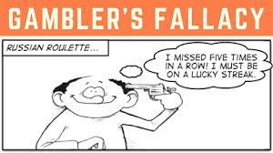

EdX course UQx Think101xThe Science of Everyday Thinking
Situation
Don't underestimate the impact of the situation over people's personality. We selectively attend to what people are doing or saying rather than the context and we don't have many labels for situations that prompt certain behaviours. If you expose people to situations, usually novel situations under well-controlled circumstances and, to some extent, even if you observe them in their day-to-day life, the degree of cross-situational consistency in behavior is relatively low.
If you want people something to do make the situation comfortable, easy, and suitable for them (e.g. pre-filling forms, people might avoid to help not because they are necessarily bad but just because they were in a hurry).
Make use of channel factors, an aspect of the situation that bridges between an intention and action and has a major impact on behavior.
Misc
People usually get more drunk if they usually drink in the evening and drink once during lunch. People usually don't die of an overdose of a drug, but because they take it in unusual circumstances. The body prepares in anticipation of the drug. This is to keep homeostasis, a stable narrow range of conditions the body can survive in.
Pupil expands by 30-40% if you are involved in a mental task (conscious effort). In addition to the effect that the pupil gets larger when in the dark.
For experts processing switching from System 2 to System 1 from consciousness mental effort to unconscious pattern matching (e.g. doctors seeing scans and making a diagnosis). They are learning things through conscious effort and then through practice in combination with rapid feedback they can perform the processing through System 1.
Experiment and find things out
-
Question assumptions
-
The law of large numbers says that with a large enough denominator---in other words, in a big wide world---stuff will happen, even very weird stuff. \"The really unusual day would be one where nothing unusual happens,\"
-
Be methodical and careful about moving through the process of answering a question.
-
Try to isolate the variables that they think will be important that will make good predictions.
-
Test things by using controlled experiments (only change one variable at the time and control the others)
-
When testing a claim, you need to decide what level of performance would convince you that there is a genuine effect.
-
Be willing to find evidence that is against what you believe and be willing to change your opinion based on better evidence to the contrary.
-
Define what it is that you really believe in.
-
How well based is the opinion that I hold? What is the evidence?
-
Does the new evidence contradict my opinion/belief?
-
If the current evidence is insufficient to make you change your > mind, which evidence would be?
-
What is the cost/benefit of changing my opinion?
-
Regression to the mean:
-
Notice that a beginner would be more likely to regress towards the > mean than an expert, because regression towards the mean is most > apparent when there is lots of randomness or 'noise' in a > measurement.
-
Remember that subsequent performance tends not to be as extreme as > initially observed extreme scores, and there\'s greater regression > with less precise measurement. There are two extremes:
-
At one extreme, predict complete regression to the mean. You\'re > saying that any deviation from the mean in the first sample is > just chance, like the coin flipping students who don\'t understand > English.
-
At the other extreme, if you have a perfect predictor (a measurement > with no error in it), predict no regression: the next score is > just as extreme as the last.
-
Most of the time, we are dealing with imperfect predictors, so we > would expect regression between these two extremes.
-
Less (contextual) information can sometimes lead to better outcomes. E.g. a teacher grading exams can better grade when he doesn't know the student he's grading.
How to learn
-
Interleaving: Mixing up learning and quizzes from across different topics/chapters.
-
Associate new knowledge with existing. Having more knowledge in a domain will make it easier.
-
Write summaries instead of highlighting or copy and paste.
-
Retrieval/quizzing instead of re-reading. Make it more difficult will pay off in the long run (desirable difficulties). Current/short term performance does not reflect learning effectiveness well. If something goes down easy we usually misinterpret that ease with understanding.
-
Practice and apply the knowledge in different domains.
-
Spaced learning/recalling instead of cramming.(flash cards). Cramming might work to ace an exam but is not good for long term retention of the information.
-
Make use of your unconscious by spending a few minutes, think about what the problem is, how you\'re going to get this thing across, it\'s been handed over to the unconscious and the unconscious. (think what is the best I want to get out of this meeting or conversation)
Illusions and Biases
Fundamental attribution error
Underestimate the impact of the situation. (Personality is not a good predictor for future behaviour since it's usually more dependent on the circumstances or the situation. E.g. people are more likely to help if they are not in a hurry. We tend to focus too much on the actor rather than the situation.
[We way overestimate our own individuality (e.g. if the movie has a 95% rating you are most likely going to like it too).]{.underline}
[We readily think that when people disagree with us, it\'s because there\'s something wrong with them, not something wrong with us, or at least not something that\'s affecting both of us that\'s making us simply disagree.]{.underline}

We judge others by their actions and ourselves by our intentions.
Fundamental cognitive error
Failure to recognize the extent to which our interpretations are shaped by our prior knowledge and experiences.
Cognitive dissonance

Must be in the middle heuristic
I.e. there is a bit of truth in both sides. Many times this is not the case. For example if 99% of scientists support the idea that climate change is mainly caused by humans and someone with the opposite opinion discusses the topic the climate change denier is very much over represented.
Post hoc ergo propter hoc
.. is an informal fallacy that states: \"Since event Y followed event X, event Y must have been caused by event X.\" Correlation vs. causation.
Multiple-endpoints fallacy
Ray and his brother, Robert, are having a little competition over who can be the first to toss a kernel of popcorn into a bowl. They alternate tosses for a while, both of them consistently failing. Eventually, Robert grabs a double handful of popcorn and tosses it at the bowl. A few fall in, and he immediately claims victory.\ \ Breaking it down, here\'s what happens: At first, they try to throw the popcorn in individually. This has a single endpoint of success: that the popcorn goes in. Then Robert throws a bunch at once. This has multiple successful endpoints: one for each individual kernel going in. A few of these go in, so Robert claims success. He points to the endpoints he reached and used those declare victory.\ \ Simply put, the multiple endpoints phenomenon describes how if you have a specific measure for success, it\'s hard to achieve it, but the more you generalize it, the easier it gets. What you have to watch out for is people who act like they had a specific measure when in fact they were going from more generalized criteria.
If you\'re observing 500 such counties, then every year that will happen to some one of them. You just never notice the 499 data points where it didn\'t.
Gambler's fallacy
.. is the incorrect belief that, if a particular event occurs more frequently than normal during the past, it is less likely to happen in the future (or vice versa), when it has otherwise been established that the probability of such events does not depend on what has happened in the past.

Availability bias
A distortion that arises from the use of information, which is most readily available, rather than that which is necessarily most representative. (e.g., what is currently overrepresented in the media vs. actual most common causes)
End-point bias
A tendency to interpret a recent short-term fluctuation as a reversal of a long-term trend.
Representative bias
Judge the frequency or likelihood of an event by the extent to which it resembles the typical case. Linda the feminist bank teller.

Sales people might use of the anchoring effect by offering an extremely high price at the beginning.
Misc
Our memories don't work like a tape or video recorder.
We are constantly making interpretations of what we perceive based the sum of our previous experiences. It doesn\'t really make sense to talk about things objectively as seeing objects and events as they are in the world instead of being filtered by our own experiences.
Memories of things change over time. Memories for the details of events can be transformed or distorted with misinformation.
Make use of your unconscious by spending a few minutes, think about what the problem is, how you\'re going to get this thing across, it\'s been handed over to the unconscious and the unconscious. (think what is the best I want to get out of this meeting or conversation)
We are also not good at assessing our own skill level (are you in bottom or top half of ...)
We are influenced by factors that we are not aware of (e.g., fishy smell makes us more suspicious)
We don\'t have any real privileged access to our own memory, own perception, and the determinants of our own behavior. (We don't know why we do things, nor are we good at interpreting our prediction whether and why we like things or made choices). Usually, we overestimate the duration of negative effects, unpleasantness only lasts for a small length of time. We underestimate how good our internal coping mechanisms work and how well we can adapt.
The brain structure is more analogous to a scaffold (the more structure you put up the more places you have to place things) rather than computer storage.
The idea is that it\'s really difficult to put yourself in the shoes or see things from the perspective of other people (recognizing the tapping a familiar song).
Music being played backwards with subliminal messages (Judas Priest).
People tend to see patterns where there are no patterns or see things that are actually not there.
Randomness doesn't mean that events don't occur in runs. It's normal that random events cluster (e.g. 6 heads in a row).
Health Claims
There is not much evidence of physiological effects of the placebo, but it is mainly based on reported feeling of people (pain and depression). Many of the effects of alternative medicine or placebos can be explained by the regression to the mean effect. When people take the treatments, they are usually at an extreme point and there is a natural tendency to go back to a better normal/average state. When looking for a placebo effect you need to test with a group that gets the drug, a group that gets the placebo and a group that gets no treatment.
Cochrane library to check for tested alternative medicines or treatments
2 Way contingency table to consider alternative causes/explanations for treatments/outcomes:

| Outcome | Yes | No |
|---|---|---|
| Prediction | ||
| Yes | Predicted yes and it yes | Predicted yes and it was no (false positive very common to avoid big negative consequences like not diagnosing appendix conditions) |
| No | Predicted no and it was yes (not common since it is avoided by false positives |
Predicted no and it is no |